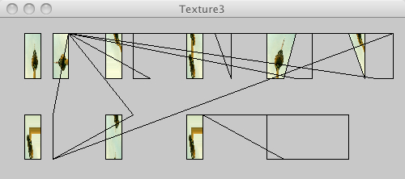

This page tests PJS textures

/* @pjs preload="berlin-1.jpg" */
import processing.opengl.*;
size(500, 200, P3D);
background(200);
PImage img = loadImage("berlin-1.jpg");
textureMode(NORMALIZED);
beginShape(QUADS);
texture(img);
vertex(30, 20, 0, 0, 0);
vertex(30, 75, 0, 0, 1);
vertex(50, 75, 0, 1, 1);
vertex(50, 20, 0, 1, 0);
vertex(65, 20, 0, 0, 0);
vertex(65, 75, 0, 1, 0);
vertex(85, 75, 0, 1, 1);
vertex(85, 20, 0, 0, 1);
endShape();
beginShape(QUADS);
texture(img);
vertex(130, 20, 0, 0, 0);
vertex(130, 75, 0, 0, 1);
vertex(150, 75, 0, 0, 1);
vertex(150, 20, 0, 1, 1);
vertex(165, 20, 0, 1, 0);
vertex(165, 75, 0, 1, 0);
vertex(185, 75, 0, 0, 0);
endShape();
beginShape(QUADS);
texture(img);
vertex(230, 20, 0, 1, 1);
vertex(230, 75, 0, 1, 0);
vertex(250, 75, 0, 0, 1);
vertex(250, 20, 0, 0, 0);
vertex(265, 20, 0, 0, 1);
vertex(285, 75, 0, 1, 0);
vertex(285, 20, 0, 1, 1);
endShape();
beginShape(QUADS);
texture(img);
vertex(330, 20, 0, 0, 0);
vertex(330, 75, 0, 0, 1);
vertex(350, 75, 0, 1, 1);
vertex(365, 20, 0, 1, 0);
vertex(365, 75, 0, 0, 1);
vertex(385, 75, 0, 0, 0);
vertex(385, 20, 0, 0, 1);
endShape();
beginShape(QUADS);
texture(img);
vertex(430, 20, 0, 0, 0);
vertex(450, 75, 0, 0, 1);
vertex(450, 20, 0, 1, 1);
vertex(465, 20, 0, 1, 0);
vertex(465, 75, 0, 0, 1);
vertex(485, 75, 0, 1, 1);
vertex(485, 20, 0, 0, 0);
endShape();
beginShape(QUADS);
texture(img);
vertex(30, 120, 0, 1, 1);
vertex(30, 175, 0, 1, 0);
vertex(50, 175, 0, 0, 1);
vertex(50, 120, 0, 1, 1);
vertex(65, 120, 0, 0, 1);
vertex(65, 175, 0, 0, 0);
endShape();
beginShape(QUADS);
texture(img);
vertex(130, 120, 0, 0, 0);
vertex(130, 175, 0, 0, 1);
vertex(150, 175, 0, 1, 0);
vertex(150, 120, 0, 1, 1);
vertex(165, 120, 0, 0, 1);
endShape();
beginShape(QUADS);
texture(img);
vertex(230, 120, 0, 1, 1);
vertex(230, 175, 0, 1, 0);
vertex(250, 175, 0, 0, 1);
vertex(250, 120, 0, 1, 1);
endShape();
beginShape(QUADS);
texture(img);
vertex(330, 120, 0, 0, 0);
vertex(330, 175, 0, 1, 1);
vertex(350, 175, 0, 0, 1);
endShape();
beginShape(QUADS);
texture(img);
vertex(430, 120, 0, 0, 0);
vertex(430, 175, 0, 0, 1);
endShape();